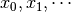

itea.classification¶
Interaction Transformation Evolutionary Algorithm for classification
This sub-module implements a specialization of the base classes BaseITEA
and BaseITExpr to be used on classification tasks.
Ideally, the user should import and use only the ITEA_classifier
implementation, while the ITExpr_classifier should be created by means of
the itea instead of manually by the user.
The ITExpr_classifier works just like any fitted scikit classifier,
but — in order to avoid the creation of problematic expressions — I
strongly discourage the direct instantiation of ITExpr_classifier.
Sub-module contents:
ITEA_classifier¶
For a more detailed description of the arguments, check the BaseITEA documentation.
- class itea.classification.ITEA_classifier(*, gens=100, popsize=100, tfuncs={'id': <function ITEA_classifier.<lambda>>}, tfuncs_dx=None, expolim=(-2, 2), max_terms=5, simplify_method='simplify_by_coef', random_state=None, verbose=None, labels=[], fit_kw=None, **kwargs)[source]¶
Bases:
itea._base._BaseITEA.BaseITEA,sklearn.base.ClassifierMixinThis is the implementation of the ITEA for the classification task.
The expressions will be used as the linear model in a logistic regression, and their coefficients will be adjusted by means of the scikit’s LogisticRegression method. The fitness will be measured using the accuracy_score metric (greater is better).
Constructor method.
- Parameters
gens (int, default=100) – number of generations of the evolutionary process.
popsize (int, default=100) – population size, consistent through each generation.
expolim (tuple (int, int), default = (-2, 2)) – tuple specifying the bounds of exponents for ITExpr.
max_terms (int, default=5) – the max number of IT terms allowed.
simplify_method (string or None, default=None) –
String with the name of the simplification method to be used before fitting expressions through the evolutionary process. When set to None, the simplification step is disabled.
Simplification can impact performance. To be simplified, the expression must be previously fitted. After the simplification, if the expression was changed, it should be fitted again to better adjust the coefficients and intercept to the new IT expressions’ structure.
random_state (int, None or numpy.random_state, default=None) – int or numpy random state. When None, a random state instance will be created and used.
verbose (int, None or False, default=None) – When verbose is None, False or 0, the algorithm will not print information. If verbose is an integer
n, then everyngenerations the algorithm will print the status of the generation. If verbose is set to -1, every generation will print information.labels (list of strings, default=[]) – (
ITExprparameter) list containing the labels of the data that will be used in the evolutionary process, and will be used inITExprconstructors.tfuncs (dict, default={'id': lambda x: x}) – (
ITExprparameter) transformations functions. Should always be a dict where the keys are the names of the transformation functions and the values are unary vectorized functions.tfuncs_dx (dict, default=None) – (ITExpr_explainer parameter) derivatives of the given transformations functions, the same scheme. When set to None, the itea package will use automatic differentiation through jax to create the derivatives.
fit_kw (dict or None, default = None) – dictionary with parameters to fit the logistic regressor model used in the
ITExpr_classifier.fit(). If none is given, then the default configuration for the customizable parameters will be:{'max_iter':100, 'alpha':0., 'beta':0.}, wheremax_iteris the maximum number of iterations of the gradient optimizer, andalphaandbetaare the elasticnet regularization parameters (when both are set to zero, then no regularization is performed).
- bestsol_¶
an ITExpr expression used as a linear model in a logistic function.
- Type
- fitness_¶
fitness (accuracy_score) of the final expression.
- Type
float
- convergence_¶
two nested dictionaries. The outer have the keys
['fitness', 'n_terms', 'complexity'], and the inner have['min', 'mean', 'std', 'max']. Each value of the inner dictionary (for example itea.convergence_[‘fitness’][‘min’]) is a list, containing the information of every generation. This dictionary can be used to inspect information about the convergence of the evolutionary process.- Type
dict
- exectime_¶
time (in seconds) the evolutionary process took.
- Type
int
- classes_¶
list containing the inferred classes of the fit data.
- Type
list
- fit(X, y)[source]¶
Performs the evolutionary process.
- Parameters
X (array-like of shape (n_samples, n_features)) – training data. Should be a matrix of float values.
y (array-like of shape (n_samples, )) – target vector. Can be a binary classification problem or a multi-class classification problem.
- Returns
self – itea after performing the evolution. Only after fitting the model that the attributes
bestsol_,fitness_, andclasses_will be available.- Return type
- Raises
ValueError – If one or more arguments would result in an invalid execution of itea.
- predict(X)[source]¶
Predict class target for each sample in X.
- Parameters
X (array-like of shape (n_samples, n_features)) – samples to be predicted. Must be a two-dimensional array.
- Returns
p – predicted target for each sample.
- Return type
numpy.array of shape (n_samples, )
- predict_proba(X)[source]¶
Predict probabilities for each possible target for each sample in X.
- Parameters
X (array-like of shape (n_samples, n_features)) – samples to be predicted. Must be a two-dimensional array.
- Returns
p – prediction probability for each class target for each sample.
- Return type
numpy.array of shape (n_samples, n_classes)
ITExpr_classifier¶
For a more detailed description of the arguments, check the BaseITExpr documentation.
- class itea.classification.ITExpr_classifier(*, expr, tfuncs, labels=[], max_iter=100, alpha=0.0, beta=0.0, **kwargs)[source]¶
Bases:
itea._base._BaseITExpr.BaseITExpr,sklearn.base.ClassifierMixinITExpr for the classification task. This will be the class in
ITEA_classifier.bestsol_.Constructor method.
- Parameters
expr (list of Tuple[Transformation, Interaction]) – list of IT terms to create an IT expression. It must be a python built-in list.
tfuncs (dict) – should always be a dict where the keys are the names of the transformation functions and the values are unary vectorized functions (for example, numpy functions). For user-defined functions, see numpy.vectorize for more information on how to vectorize your transformation functions.
labels (list of strings, default=[]) – list containing the labels of the variables that will be used. When the list of labels is empty, the variables are named .
max_iter (int, default=100) – the maximum number of iterations that the optimization gradient method should perform to adjust the coefficients of the linear model used as the decision function in the inner logistic regression method implemented in the
ITExpr_classifier. Smaller values can improve performance, at the cost of a weaker adjustment.alpha (float, default = 0.0) – The logistic regressor will use the saga solver with a elastic net regularization. Alpha parameter controls the L1 regularization.
beta (float, default = 0.0) – The logistic regressor will use the saga solver with a elastic net regularization. Beta parameter controls the L2 regularization.
- n_terms¶
number of inferred IT terms.
- Type
int
- is_fitted¶
boolean variable indicating if the ITExpr was fitted before.
- Type
bool
- _fitness¶
fitness (accuracy_score) of the expression on the training data.
- Type
float
- intercept_¶
intercept array used in the probability estimation for each class of the training data.
- Type
numpy.array of shape (n_classes, )
- coef_¶
coefficients used in the probability estimation for each class of the training data.
- Type
numpy.array of shape (n_classes, n_terms)
- classes_¶
target classes inferred from the training y target data.
- Type
numpy.array of shape (n_classes, )
Notes
The saga is described in the paper: “Defazio, A., Bach F. & Lacoste-Julien S. (2014). SAGA: A Fast Incremental Gradient Method With Support for Non-Strongly Convex Composite Objectives”
- covariance_matrix(X, y)[source]¶
Estimation of the covariance matrix of the coefficients.
- Parameters
X (numpy.array of shape (n_samples, n_features)) –
- Returns
covar – each element in
covarwill be the covariance matrix to the logistic regressor when considering the classes as a one vs all problem.The last row/column of each
covar[i]is the intercept.- Return type
numpy.array of shape (n_classes, n_terms+1, n_terms+1)
- fit(X, y)[source]¶
Fits the logistic regression with the IT expression as the linear method.
This method performs the transformation of the original data in X to the IT expression domain then fits a logistic regressor using the IT expression as decision function. The logistic regressor is fitted by means of the saga method without any penalties.
- Parameters
X (array-like of shape (n_samples, n_features)) – training data.
y (array-like of shape (n_samples, )) – target vector. Can be a binary classification problem or a multi-class classification problem.
- Returns
self – itexpr after fitting the coefficients and intercept. Only after fitting the model that the attributes
coef_,intercept_, andclasses_will be available.- Return type
Notes
This fit method does not check if the input is consistent, to minimize the overhead since the
ITEA_classifierwill work with a population ofITExpr_classifierinstances. The input is then checked in the fit method fromITEA_classifier. If you want to use the fit method directly from theITExpr_classifier, it is recommended that you do the check withcheck_array` `that scikit-learn provides in ``sklearn.utils.validation.
- predict(X)[source]¶
Predict class target for each sample in X.
- Parameters
X (array-like of shape (n_samples, n_features)) – samples to be predicted. Must be a two-dimensional array.
- Returns
p – predicted target for each sample.
- Return type
numpy.array of shape (n_samples, )
- Raises
NotFittedError – If the expression was not fitted before calling this method.
- predict_proba(X)[source]¶
Predict probabilities for each possible target for each sample in X.
- Parameters
X (array-like of shape (n_samples, n_features)) – samples to be predicted. Must be a two-dimensional array.
- Returns
p – prediction probability for each class target for each sample.
- Return type
numpy.array of shape (n_samples, n_classes)
- Raises
NotFittedError – If the expression was not fitted before calling this method.